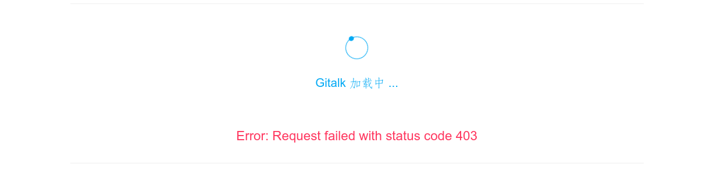

偶然发现了Gitee也有Page功能，于是就想建立一个博客用来记录自己写的小应用的使用说明文档。
下面是我搭建博客的过程，采用Hexo框架。
概况 - Pre
- 系统：Debian 10 Buster GNU/Linux x86_64
托管平台：码云（Gitee.com）
博客框架：Hexo
上手 - Get Start
搭建环境 - Set Up Environment
更新系统(System Upgrade)：
sudo apt update && sudo apt dist-upgrade安装git(Install Git)：
sudo apt install git- 安装nodejs(Install nodejs)：
sudo apt install nodejs - 检查版本(Check nodejs version >= 10.13 ,and 12.0 is recommented)：
nodejs -v(Node.js 版本需不低于 10.13，建议使用 Node.js 12.0 及以上版本) - 安装npm(Install npm)：
sudo apt install npm - 安装cnpm [For Chinese ,fast then npm]：
npm install cnpm -g --registry=https://r.npm.taobao.org - 安装Hexo(Install Hexo)：
cnpm install -g hexo-cli
新建码云仓库 - New Gitee Repository
新建一个码云仓库，仓库名是你的用户名，比如我的码云地址是：
https://gitee.com/rmshadows所以我新建的仓库名是：
rmshadows新建一个分支，用于以后的源代码迁移，比如这里新建一个分支是
hexo-src创建SSH密钥：
Linux Terminal :
ssh-keygen -t rsa -C "xxxxxxxxx@xxxx.com"，这里请用你的Git Commit要用的邮箱。这个命令会在$Home目录下的ssh隐藏文件夹中（$HOME/.ssh/）生成一个id_rsa.pub钥匙。文件内容如下：1
ssh-rsa xxxxxxxx...(一大堆字母就是了) xxxxxxxxxx@xxxx.com(Here is your E-mail)
然后复制这个文件里的所有内容到码云中，添加SSH公钥。
验证：添加完毕后在Terminal中尝试链接Gitee：
ssh git@gitee.com成功的话会有下面中一段话：
1
2Hi 「Your Name」! You've successfully authenticated, but GITEE.COM does not provide shell access.
Connection to gitee.com closed.然后咱们就可以愉快地提交代码啦。
本地工作区搭建 - Local Workplace
新建工作区文件夹
mkdir Gitee_Hexo_Blog_Project && cd ./Gitee_Hexo_Blog_Project克隆远程仓库，记得复制的是仓库的SSH地址，不是HTTPS地址！而且，克隆的是hexo-src分支！不是Master分支哦
git clone git@gitee.com:「Your User Name」/「Your User Name」.git -b hexo-src进入克隆好的仓库中
cd 「Your User Name」新建Hexo文件夹，并初始化Hexo文件夹。
mkdir Hexo && Hexo init ./Hexo如果觉得init太慢了，可以修改下（这里假设你是全局安装，或者你可以自己找到Hexo安装目录
type hexo）init脚本中的GIT_REPO_URL地址，改为我的克隆仓库的地址：https://gitee.com/rmshadows/hexo-starter.gitvi /usr/lib/node_modules/hexo-cli/lib/console/init.js然后保存就行了。
初始化完成后，进入Hexo文件夹，执行
npm install。这边说下大概的情况：
- scaffolds：这里放的帖子初始模板。
- themes：这里是主题文件，你可以在 这里 找到你喜欢的主题。下面是我喜欢的主题：
- source：这里是资源文件
- _posts ：这里是你的博文，每次
hexo new xxx就会在这里生成文件，来这里编辑就是了。用的是Markdown标记语言，就跟写README.md文件一样，so easy。
- _posts ：这里是你的博文，每次
- public：这里是要发布到master分支的文件。
最后，修改配置文件
_config.yml配置文件如下 - 具体参数我后面讲(更换主题中讲，因为初始文件我没怎么改)：
1
2
3
4
5
6
7
8
9
10
11
12
13
14
15
16
17
18
19
20
21
22
23
24
25
26
27
28
29
30
31
32
33
34
35
36
37
38
39
40
41
42
43
44
45
46
47
48
49
50
51
52
53
54
55
56
57
58
59
60
61
62
63
64
65
66
67
68
69
70
71
72
73
74
75
76
77
78
79
80
81
82
83
84
85
86
87
88
89
90
91
92
93
94
95
96
97
98
99
100
101
102
103
104
105
106
107
108# Hexo Configuration
## Docs: https://hexo.io/docs/configuration.html
## Source: https://github.com/hexojs/hexo/
# Site
title: 你网站的名字
subtitle: 网站副标题
description: 描述
keywords: 关键词
author: 你的名字
language: 语言
timezone: 时区
# URL
## If your site is put in a subdirectory, set url as 'http://example.com/child' and root as '/child/'
url: 你的网址URL
root: 根目录
permalink: 生成的链接格式
permalink_defaults:
pretty_urls:
trailing_index: true # Set to false to remove trailing 'index.html' from permalinks
trailing_html: true # Set to false to remove trailing '.html' from permalinks
# Directory
source_dir: source
public_dir: public
tag_dir: tags
archive_dir: archives
category_dir: categories
code_dir: downloads/code
i18n_dir: :lang
skip_render:
# Writing
new_post_name: :title.md # File name of new posts
default_layout: post
titlecase: false # Transform title into titlecase
external_link:
enable: true # Open external links in new tab
field: site # Apply to the whole site
exclude: ''
filename_case: 0
render_drafts: false
post_asset_folder: false
relative_link: false
future: true
highlight:
enable: true
line_number: true
auto_detect: false
tab_replace: ''
wrap: true
hljs: false
prismjs:
enable: false
preprocess: true
line_number: true
tab_replace: ''
# Home page setting
# path: Root path for your blogs index page. (default = '')
# per_page: Posts displayed per page. (0 = disable pagination)
# order_by: Posts order. (Order by date descending by default)
index_generator:
path: ''
per_page: 10
order_by: -date
# Category & Tag
default_category: uncategorized
category_map:
tag_map:
# Metadata elements
## https://developer.mozilla.org/en-US/docs/Web/HTML/Element/meta
meta_generator: true
# Date / Time format
## Hexo uses Moment.js to parse and display date
## You can customize the date format as defined in
## http://momentjs.com/docs/#/displaying/format/
date_format: YYYY-MM-DD
time_format: HH:mm:ss
## updated_option supports 'mtime', 'date', 'empty'
updated_option: 'mtime'
# Pagination
## Set per_page to 0 to disable pagination
per_page: 10
pagination_dir: page
# Include / Exclude file(s)
## include:/exclude: options only apply to the 'source/' folder
include:
exclude:
ignore:
# Extensions
## Plugins: https://hexo.io/plugins/
## Themes: https://hexo.io/themes/
theme: landscape
# Deployment
## Docs: https://hexo.io/docs/one-command-deployment
deploy:
type: 部署方式
repo: 仓库SSH地址
branch: 分支然后安装自动部署插件：
cnpm install hexo-deployer-git --save
现在基本配置完了，使用
hexo new "新帖子"发布第一篇博文。hexo clean && hexo g生成静态页面，在public文件夹中，这个就是要放到master分支上的文件。使用
hexo d进行部署。
Gitee Page
- 部署好后，在码云仓库页面Service中有个Gitee Pages服务，点进去，分支默认master，点击开始。最后会给你一个链接：
https://「Your User Name」.gitee.io/ - 完成。务必记得每次部署完都要手动Update下Gitee Pages，除非你花钱了。
我的配置 - My Blog
好了，现在说下我的配置文件，其他主题大同小异，都可以参考的。
我这里用的是Live My Life主题。
主题搭建 - Hexo Theme
hexo init hexorm -rf _config.yml package.json scaffolds source themes yarn.lock只保留node_modules文件夹git clone https://github.com/V-Vincen/hexo-theme-livemylife.gitmv hexo-theme-livemylife/* ./rm -rf hexo-theme-livemylifenpm install && npm audit fix && npm audit fix --forcecnpm install hexo-deployer-git --savehexo clean && hexo g
主配置文件 - _config.yaml
注意：因为主题不同，配置文件也会有所不同，加上插件不同，配置文件页不同，没有的配置你忽略就行了，或者去插件市场找插件就有了。
1 | # Hexo Configuration |
博文加密——闹着玩
插件仓库：https://github.com/D0n9X1n/hexo-blog-encrypt/blob/master/ReadMe.zh.md
安装：npm install --save hexo-blog-encrypt
需要修改的地方：博客加密插件无法加密TOC，所以需要改主题文件：
hexo/themes/livemylife/layout/_partial/catalog.ejs
原文件内容：生成目录
1 | <!-- Table of Contents --> |
修改为：
1 | <!-- Table of Contents --> |
添加鼠标特效
将特效js放于：hexo/themes/livemylife/source/js中
特效文件，举个例子：
1 | onload = function() { |
js来源：https://github.com/djzhao627/JSClickBubble
编辑hexo/themes/livemylife/layout/layout.ejs文件的Footer中添加：
1 | <!--这里是自定义的代码--> |
配置文件添加：
1 |
|
添加ISSO评论系统
hexo/themes/livemylife/layout/_partial/comment.ejs
添加：
1 | <!--ISSO--> |
主配置文件：
1 | # isso |
添加Livere和GitalkProxy参数
为什么从Gitalk转为Livere？
2021年初，突然发现Gitalk挂了，一直403，直到后来，看了Issue找到了答案，解决办法有，我也试过，可以用，但想到身边有Github的人好像不是很多，Gitalk评论需要登录Github，于是就转为韩国的Livere（来必力）评论系统了。
事情原由：

hexo/themes/livemylife/layout/_partial/comment.ejs
1 | <!--这里添加--Livere--> |
_config.yml中如果要启用Livere，需要：
1 | # Comment Settings |
Hexo主题开发
文章推荐：
源代码备份 - Back Up Src
网页部署好了，源代码要备份在hexo-src分支，方便以后的迁移工作。
首先，新建忽略列表：
vi ./hexo/.gitignore(放在hexo目录)1
2
3
4
5
6
7
Thumbs.db
db.json
*.log
node_modules/
/
*/
git add . -Agit commit -m "提交注释"git push origin hexo-src
搞定。
数学公式
转载自Sooda的博客
安装渲染器
hexo默认的渲染器是marked，并不支持mathjax。kramed是在marked基础上修改的，支持了mathjax。你的hexo工程目录下的node_modules中可以找到对应的渲染器文件夹。同时在你的工程目录下用以下命令安装kramed。另外补充一个NexT配置中推荐的渲染器hexo-renderer-pandoc，功能很强大不仅可以渲染markdown，还支持textile、reStructedText等许多其他格式。具体参见官方教程
1 | npm uninstall hexo-renderer-marked --save |
如果你安装了hexo-math包，卸载再安装hexo-renderer-mathjax包(用npm，不要用cnpm)
1 | npm uninstall hexo-math --save |
更新mathjax的CDN链接，打开node_modules/hexo-renderer-mathjax/mathjax.html（这一步我没有，我没使用CDN）
但是，我把http改成https了：
1 | <script src="https://cdn.mathjax.org/mathjax/latest/MathJax.js?config=TeX-AMS-MML_HTMLorMML"></script> |
修改
1 | vi node_modules/hexo-renderer-mathjax/mathjax.html |
开启mathjax
打开主题的_config.yml文件，找到math字段，新版的NexT主题支持两个数学渲染引擎mathjax和katex，这里我们使用mathjax
1 | math: |
文章中开启mathjax标签
为加快渲染速度，渲染器只会在标签中有mathjax: true的文章中使用利用mathjax渲染。例：
1 | title: hexo支持mathjax |
评论系统指南
如何选择请参考：
- 第三方评论系统之我见
- 静态博客评论系统的比较及选择
- Talkyard——注意服务器资源占用
- Utteranc——注意Github API访问速度。
- Beaudar——中文版utteranc
- ISSO:https://posativ.org/isso/
- Livere:https://www.livere.com/——第三方
关于Hexo部分报错解决办法
官方文档 -> https://hexo.io/docs/troubleshooting.html
关于主题：
敏感标签
1 | FATAL Something's wrong. Maybe you can find the solution here: https://hexo.io/docs/troubleshooting.html |
用{ { } }或{ ％ ％ }包装的内容将被解析，并可能导致问题。您可以使用原始标签插件包装敏感内容。
比如：
1 | {% raw %} |
升级依赖包
更新有风险，升级需谨慎。
npm-check-updates
安装：sudo npm install -g npm-check-updates
使用：npm-check-updates 或者ncu
升级依赖包： ncu -u && npm install
一键升级： ncu -a
npm-check
选择性升级：npm-check -u
依次选择对应的依赖就行了。
文章推荐
If you like this blog or find it useful for you, you are welcome to comment on it. You are also welcome to share this blog, so that more people can participate in it. If the images used in the blog infringe your copyright, please contact the author to delete them. Thank you !